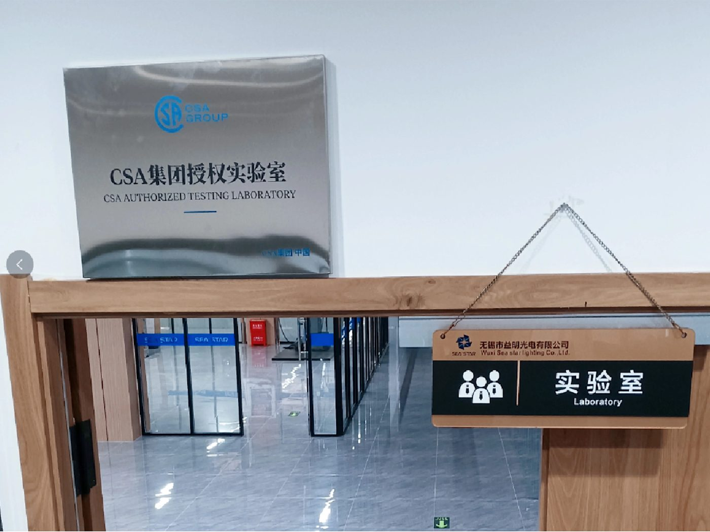
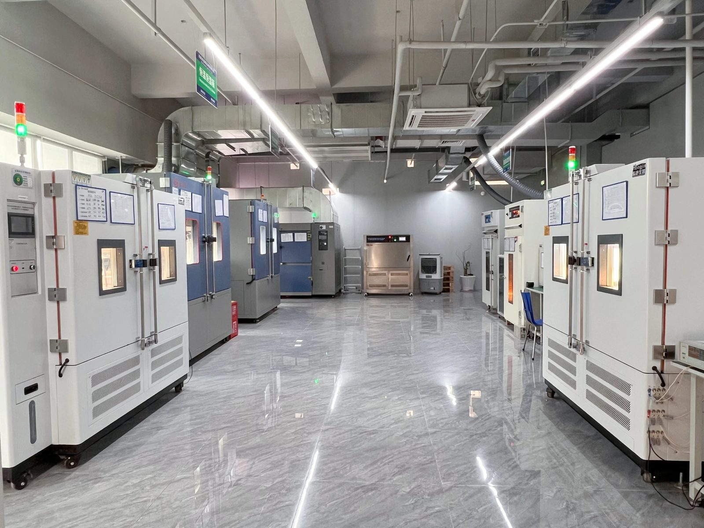
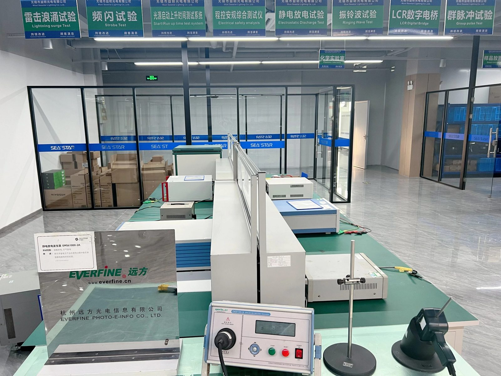
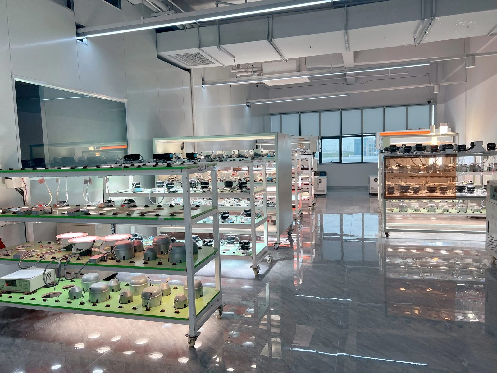

Driver hardware
Power-stage and control-circuit design for mains-powered LED drivers.
In-house engineering, a CSA-witnessed testing laboratory and a certified quality system — the capability that stands behind every product we ship. The facility data on this page is taken from publicly available information on the SEA☆STAR official website.
Wuxi Seastar is a firm advocate of technological and product innovation. More than 45 engineers work across the disciplines below, supported by professional sales consultancy and personalised service.
Power-stage and control-circuit design for mains-powered LED drivers.
Firmware for dimming, sensing and wireless-controlled drivers.
Mechanical design, thermal path and enclosure engineering.
Optical design and photometric performance of luminaires.
Our team has extensive experience across the mainstream LED driver families, both wired and wireless-controlled.
Phase-cut dimming compatible with legacy wall dimmers.
Analogue dimming widely used in commercial and industrial lighting.
Multi-protocol dimming in a single driver platform.
Bluetooth Low Energy wireless control.
WiFi-connected drivers for smart-building and residential control.
Dual-radio wireless-controlled drivers.
Wuxi Seastar has established a CSA Witness Lab with rigorous testing procedures. The laboratory is divided into six areas, including electrical performance, optical, environmental and reliability testing. It is equipped with advanced experimental equipment such as integrating spheres, goniophotometers, constant temperature and humidity test chambers, thermal shock test chambers, lightning surge generators, burst pulse generators, ringing wave generators and EMI testing devices.






Adhering to the quality policy of “continuous improvement for customer satisfaction”, the company has established a dedicated quality supervision and inspection department, equipped with testing instruments and structured test methods. The department works on the pre-control of quality risks rather than end-of-line detection alone.
Quality management system certification.
Environmental management system certification.
Automotive quality management system certification.
Manufacturing assets — high-speed SMT and wave-soldering lines, final assembly, injection moulding, stamping, the Class 100,000 clean room and monthly capacity — are described on the OEM electronics manufacturing page.
Tell us the project — driver development, luminaire design, or product that has to pass testing before it ships.